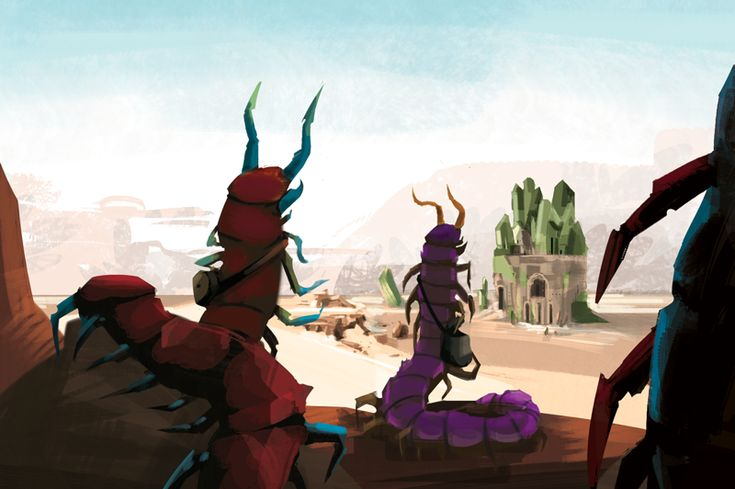

This is one of my favorite video games of all time, so I wouldn't pass up the chance to visit it in the flesh if I was given the opportunity.
This is a tabletop rpg that has really fallen under the radar, and it has one of my favorite fantasy worlds of all time.
Ok yeah this one is technically on earth and I could visit it in a certain sense, but the landscapes that already exist arent't the only reason I would want to see this.